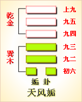

第四十四卦初六爻详解 第四十四卦九二爻详解 第四十四卦九三爻详解
第四十四卦九四爻详解 第四十四卦九五爻详解 第四十四卦上九爻详解
周易第四十四卦 姤 天风姤 乾上巽下
姤：女壮，勿用取女。
彖曰：姤，遇也，柔遇刚也。勿用取女，不可与长也。天地相遇，品物咸章也。刚遇中正，天下大行也。姤之时义大矣哉!
象曰：天下有风，姤;后以施命诰四方。
初六：系于金柅，贞吉，有攸往，见凶， 羸豕踟躅。象曰：系于金柅，柔道牵也。
九二：包有鱼，无咎，不利宾。象曰：包有鱼，义不及宾也。
九三：臀无肤，其行次且，厉，无大咎。象曰：其行次且，行未牵也。
九四：包无鱼，起凶。象曰：无鱼之凶，远民也。
九五：以杞包瓜，含章，有陨自天。象曰：九五含章，中正也。有陨自天，志不舍命也。
上九：姤其角，吝，无咎。象曰：姤其角，上穷吝也。
姤卦卦象，天风姤卦的象征意义
姤卦，这个卦是异卦相叠，下卦为巽，上卦为乾。乾为天，巽为风。天下有风，吹遍大地，阴阳交合，万物茂盛。
姤，遇也。在姤卦中，乾为天在上，巽为风在下，象征着一个人的志愿和理想，只要能像风一样在普天之下流动，就会遇到实现的机会。
姤卦位于夬卦之后，《序卦》中这样分析道：“决必有遇，故受之以姤。姤者，遇也。”决断而去之后，一定会有遇合，所以接着出现了姤卦。姤卦与夬卦相反，互为“综卦”。
《象》中这样解释姤卦：天下有风，姤;后以施命诰四方。这里指出：姤卦的卦象是巽(风)下乾(天)上，为天底下刮着风，风吹遍天地间各个角落，与万物相依之表象，象征着“相遇”;正如风吹拂大地的情形一样，君王也应该颁布政令通告四面八方。
姤卦代表男女相遇，这一卦是消息卦，代表五月。姤卦属于上卦。《象》中这样来断此卦：他乡遇友喜气欢，须知运气福重添，自今交了顺当运，向后管保不相干。
【姤卦卦象，天风姤卦的象征意义释义】
此卦卦名为姤。姤就是相遇的意思。在此卦中指的是柔爻遇到了刚爻。上一卦是众阳爻驱逐了阴爻，这个阴爻被驱逐后又会与新的阳爻相遇，所以夬卦的后面是姤卦。这也就是《序卦传》中所说的：“决必有遇，故受之以姤。姤者，遇也。”
姤卦卦画：姤卦的卦画为下面一个阴爻，上面五个阳爻，与夬卦的卦画排列顺序正好相反，夬卦与姤卦互为覆卦。
姤卦卦象：从卦象上分析，姤卦下面的一个阴爻代表阴气的始生，上面的五个阳爻代表阳气尚处于强盛时期。
姤卦是十二消息卦之一，代表的节气为夏至。姤卦六爻代表芒种至小暑的三十余天。五天为一候，一爻代表一候。此时天地之气阳极阴生，所以卦象上下爻出现了一个阴爻。这一个阴爻反映在天气上，便是出现了潮湿的气候。姤卦上卦为乾为天，下卦为巽为风，天下刮起了风便是姤卦的卦象。风无孔不入，所以也说明相遇在任何地方都会出现的。在郑玄本中“姤”为“遘”字，既邂逅的“逅”。指的是没有约定的不期而遇。这种相遇自然是最容易出现的了。另外，姤卦的上卦乾代表老男人，下卦的巽代表成熟的女性。老人娶少妇在《周易》中认为是一件好事情，但此处的老人所相遇相合的却是一位成熟、强壮的女性，所以就会对老人不利了。
关键词：周易,姤卦,天风姤,乾上巽下
始卦：女子受伤，不利于娶女。
初六：衣服挂在纺车转轮的铜把手上了，占得吉兆。占问出行，则见凶象。拉着不肯前进的瘦猪。
九二：厨房里有鱼，没有灾祸。不利于宴请宾客。
九三：臀部受了伤，走起路来十分困难。危险，但没有大灾难。
九四：厨房没有鱼，一动就凶险。
九五：缠着把树往上长的轮从很好看，突然从很高的地方掉下一个瓜。
上九：碰上野兽，同它搏斗，危险，结果没有灾祸。
①姤(gou)是本卦的标题。姤用作“遘”，意思是遇合，也用作婚媾的 “媾”。全卦的内容与出行和婚姻有关，并且都是占问梦中景象，即梦占。标 题取“姤”的两种意义。
②壮：受伤。
③勿用：不利。取;用作 “娶”。
(4)金柅(ni)：铜制的纺车转轮把手。
⑤赢豕：瘦猪。孚：用 作“桴”，意思是牵引。踯躅(Zhi zhu)：徘徊不前的样子。
(6)包：用作 “疱”，意思是厨房。
(7)宾：宾客，这里指宴请宾客。
(8)起：动。
(9)以：倚靠，缠着。包瓜：匏瓜。
(10)含章：很有文彩。
(11)陨：掉 下，落下。
(12)姤：遭遇，这里指遇上野兽。其：而。角：搏斗。